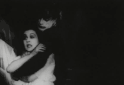
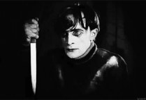
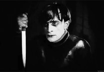

Terror
O terror desperta sentimentos escabrosos. Dar um calafrio na espinha e gerar aquela aflição que nos impede de sair da poltrona é sua especialidade. Assombrações, zumbis, monstros e psicopatas: O terror permeia o que de mais horrível sua mente imaginar!
O terror começou em 1902, mas muitos registros foram perdidos. Em 1920, ocorreu uma popularização do gênero. Dessa época, The Cabinet of Dr. Caligari é um longa que merece destaque.


